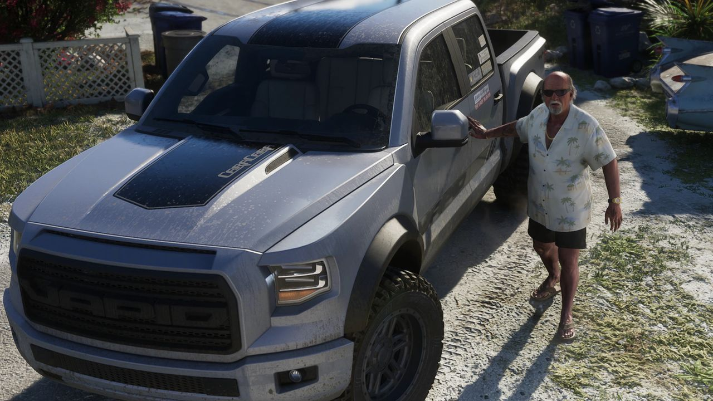
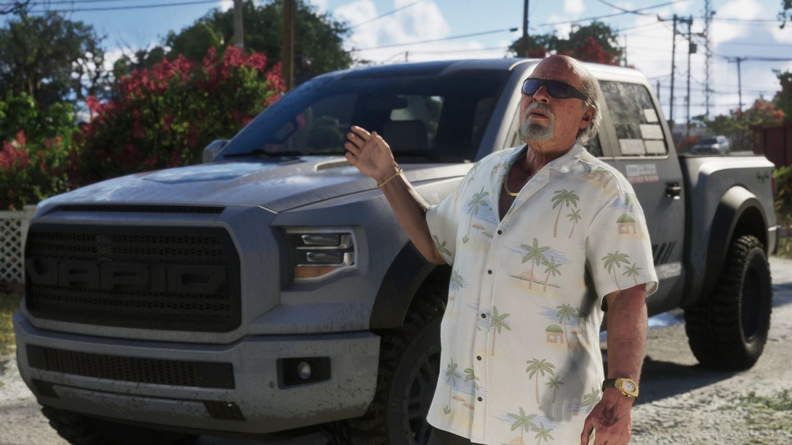
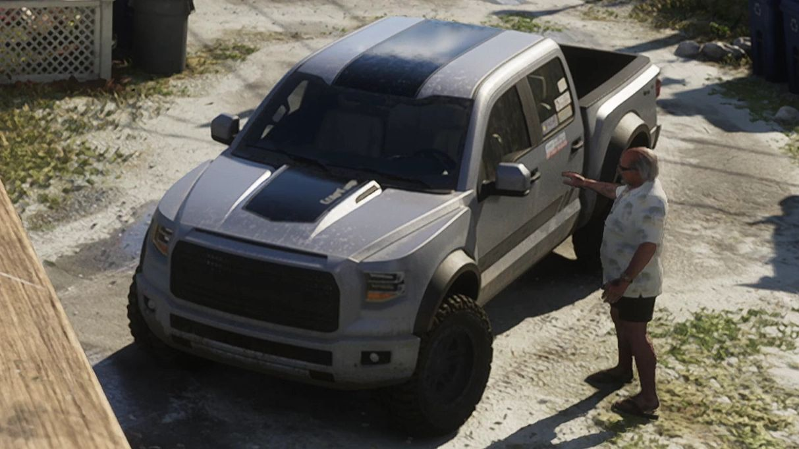
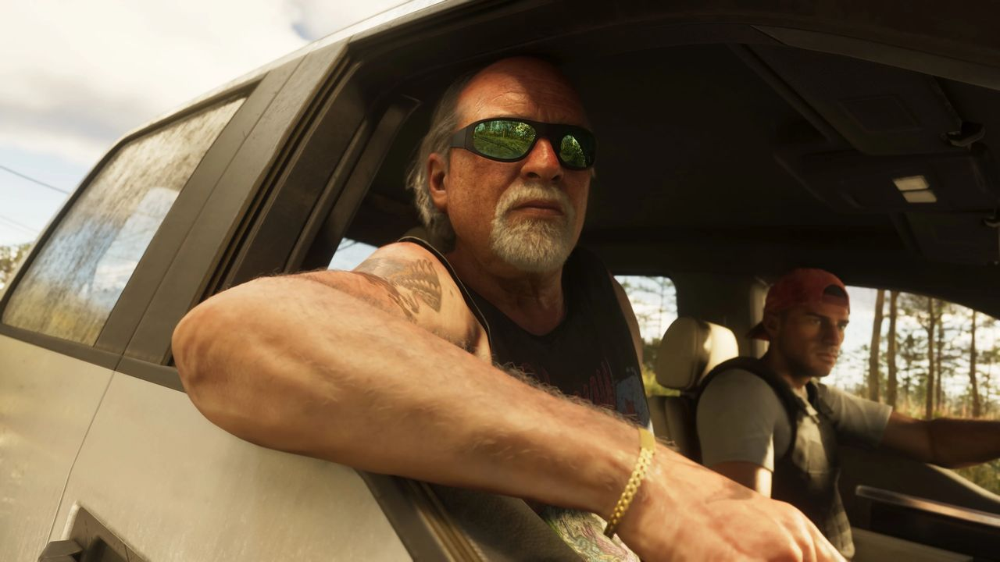
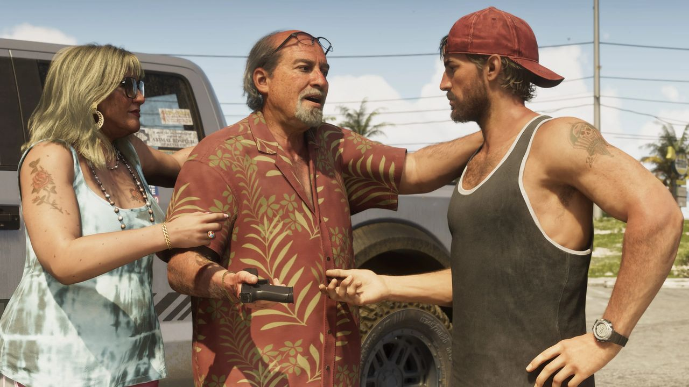

© Rockstar Games / Take-Two Interactive — image officielle de GTA VI (bande-annonce), via GTA Wiki.
Vapid Caracara 4x4
EN BREF
- Constructeur : Vapid
- Catégorie : SUV, pick-up & utilitaire
- Fiabilité : 🟢 présent dans le matériel officiel de Rockstar
STATISTIQUES
Jauges de 0 à 100 : valeurs officielles affichées par Rockstar Games (Social Club) pour ce véhicule dans GTA V, relevées par le GTA Wiki. Les performances dans GTA 6 n'ont pas encore été publiées et peuvent différer.
Vapid Caracara 4x4 fait son retour dans GTA 6 (suv, pick-up & utilitaire) : déjà présent dans un épisode précédent de la série, il a été repéré dans le matériel officiel du jeu.
Dans GTA 6
La présence du Caracara 4x4 dans GTA 6 a d'abord été repérée dans la bande-annonce 1 : un modèle orange s'enlise dans la boue, en arrière-plan, au Thrillbilly Mud Club (0:55). On le voit ensuite plusieurs fois dans la bande-annonce 2 et sur les captures du site officiel, surtout comme véhicule de prédilection de Brian Heder.
Design et inspiration
Il s'inspire fortement du Ford F-150 Raptor de deuxième génération (P552), avec une calandre basée sur les finitions Lariat de 2015-2018 mais avec une seule barre centrale, comme le Shelby F-150. C'est une version plus courte, à quatre roues motrices et non armée du Caracara.
Dans GTA V et GTA Online
Pick-up quatre portes ajouté à GTA Online avec la mise à jour The Diamond Casino & Resort (23 juillet 2019). Sur route, il a une conduite un peu ondulante à cause de son faible rayon de braquage ; en tout-terrain, il reste bien posé. 875 000 $ chez Southern San Andreas Super Autos. Variantes : Caracara et Caracara Pursuit.
Galerie




© Rockstar Games / Take-Two Interactive — images officielles de GTA VI (bandes-annonces, captures, site officiel), via GTA Wiki.